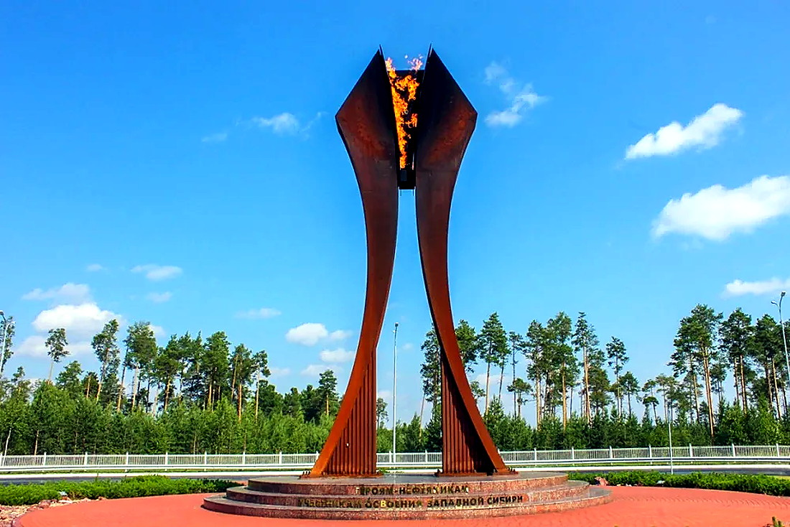

Ночной Когалым
Лучшие места для вечерних прогулок и северной атмосферы.
Смотреть местаКогалым без туристической мишуры
Места, готовые городские сценарии, афиша и объявления — в одной подборке. Не просто список карточек, а нормальный путеводитель: что посмотреть, куда сходить и как собрать прогулку.
Лучшие места для вечерних прогулок и северной атмосферы.
Смотреть местаКонцерты, выставки, фестивали и события Когалыма.
Открыть афишуКороткая хронология Когалыма: первые строители, нефтяная история и современный город.
Открыть историюФото Когалыма: памятники, парки, культура, северный свет и городские детали.
Смотреть фотоСайт стал не просто каталогом мест: теперь есть короткие сценарии для прогулки, семьи, вечернего города и знакомства с историей.

Набережная, городские часы, центральные точки и несколько мест для фото без лишней беготни.
Открыть сценарий
Галактика, океанариум, прогулочные зоны и спокойный темп, чтобы день не превратился в марафон.
Открыть сценарий
Маршрут для атмосферы: подсветка, спокойные улицы, набережная и северный городской вайб.
Открыть сценарий
Памятники, нефтяная история, Парк Победы и точки, которые объясняют характер Когалыма.
Открыть сценарий
Место памяти и гордости
⌖События, концерты, творчество
▣Прогулки и красивый вид
≋
Север, нефть и характер
⌾Атмосфера северного города
✦Собрали маршруты, места, афишу и объявления в одном городском портале. Быстро, понятно, без лишнего шума.
Подробнее о городеСильная сторона города — контраст: северная природа, нефтяная история, современные культурные площадки, семейные места и спокойные прогулочные зоны. Это надо показывать слоями, а не одной строкой «город с характером».
Город вырос вокруг большой промышленной истории Западной Сибири.
Театр, музейные проекты и выставочные пространства дают сайту живой повод возвращаться.
Галактика, парки, прогулочные зоны и спокойная городская среда — нормальная база для подборок.